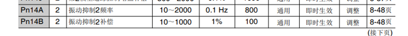
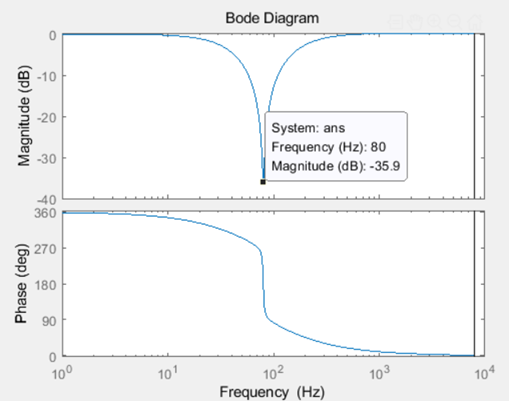
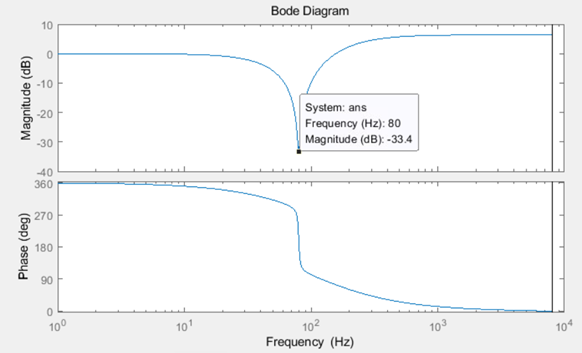

安川伺服源码推导位置指令陷波器
- 前向欧拉离散化不能保证稳定性，但并不是不能使用，根据实际应用场景和参数选择合适的离散化方法。
- 对位置指令的滤波操作必须要考虑是否会丢失指令脉冲。
前言
安川伺服Pn14A/Pn14B振动抑制2是行业典型位置指令陷波器，用于抑制机械手、龙门等长传动机构末端抖动。网上大多只给调试经验，很少结合底层参数计算逻辑做完整数学推导。
一、伺服参数与滤波系数数学定义
1. 变量映射伺服功能码及系数计算
1 | void PcmdFilCalculatePrmVibSupFil( VIBSUPFIL *VibSupFil, ULONG ff_frq, ULONG ff_fil, LONG ScanTimeNs ) |

| 代码内部变量 | 伺服参数 | 物理含义 | 单位 |
|---|---|---|---|
| ff_frq | Pn14A | 振动抑制2中心频率参数 | 0.1Hz |
| ff_fil | Pn14B | 振动抑制2补偿/增益参数 | 1% |
| ScanTimeNs | $T_s$ | 伺服控制周期 | ns |
| Kff1 | $k_1$ | 系数1 | 定点24位 |
| Kff2 | $k_2$ | 系数2 | 定点24位 |
| Kff3 | $k_3$ | 系数3 | 定点24位 |
2. 代码数学公式剥离
代码内部全部为定点整数运算，去除缩放库MlibScalKxgain定点换算逻辑后，纯数学表达式如下：
中间频率乘积并饱和限幅
$\omega_{2\text{max}}=\text{MAXOMEGA2}(T_s) \times 1000$，限制最大抑制频率。
高频增益系数 $k_1$
周期耦合中间量
状态系数 $k_2、k_3$
关键结论：代码仅完成滤波器系数离线计算，真正滤波迭代由离散状态空间方程执行。
二、离散域：状态空间迭代方程
安川该陷波器为二阶离散状态滤波器，两个状态变量 $wb_1[n],wb_2[n]$，输入$u$为位置指令增量，输出$y$为滤波后位置指令增量。1
2
3
4
5
6
7
8
9
10
11
12
13
14
15
16
17
18
19
20
21
22
23
24
25
26
27
28
29
30
31
32
33
34
35
36
37
38
39
40
41
42
43
44
45
46
47
48
49
50
51
52
53
54
55
56
57
58
59
60
61
62
63
64
65
66
67
68
69
70
71
72
73
74
/****************************************************************************************************/
/* */
/* 振动抑制滤波器运算 */
/* */
/* 概要: 振动抑制滤波器具备针对设定频率的陷波滤波特性。 */
/* 用于抑制定位时机台振动等末端抖动。 */
/* 可与移动平均类位置指令滤波器、MFC滤波器串联使用。 */
/* */
/****************************************************************************************************/
LONG PcmdFilVibSupFilter( VIBSUPFIL *VibSupFil, LONG dPcmd, BOOL *RefZSignal )
{
LONG AvffFili;
LONG AvffFilo;
LONG x1;
LONG x2;
LONG x3;
LONG wk = 0;
/*--------------------------------------------------------------------------------------------------*/
/* 指令完成&输出完成检测 */
/*--------------------------------------------------------------------------------------------------*/
if( (dPcmd == 0) && (VibSupFil->var.Buf == 0) )
{ /* 指令完成 && 滤波器缓存无残留 → 输出全部完成 */
VibSupFil->conf.Pexe = VibSupFil->conf.VibSupPrm; /* 执行参数切换 */
}
AvffFili = dPcmd; /* 振动抑制滤波器输入 = 位置指令脉冲 */
/*--------------------------------------------------------------------------------------------------*/
/* 振动抑制滤波器运算 */
/*--------------------------------------------------------------------------------------------------*/
if( VibSupFil->conf.Pexe.enable )
{ /* 功能使能 */
x1 = MlibPfbkxremNolim( AvffFili, VibSupFil->conf.Pexe.Kff1, &VibSupFil->var.rem1 );
x2 = MlibPfbkxremNolim( VibSupFil->var.wkbf1, VibSupFil->conf.Pexe.Kff2, &VibSupFil->var.rem2 );
x3 = MlibPfbkxremNolim( VibSupFil->var.wkbf2, VibSupFil->conf.Pexe.Kff3, &VibSupFil->var.rem3 );
VibSupFil->var.wkbf1 += (x1 - x3 - AvffFili);
VibSupFil->var.wkbf2 += (x1 - x3 + x2);
AvffFilo = x1 - x3; /* 振动抑制滤波器输出 */
/*--------------------------------------------------------------------------------------------------*/
/* 滤波器输入输出差值（缓存残留量） */
/*--------------------------------------------------------------------------------------------------*/
VibSupFil->var.Buf = MlibPerrcalx( AvffFili, AvffFilo, VibSupFil->var.FilioErr );
if( VibSupFil->var.Buf != 0 )
{ /* 位置指令未全部输出完毕 */
*RefZSignal = FALSE;
}
/*--------------------------------------------------------------------------------------------------*/
/* 振动抑制滤波器内部变量初始化 */
/*--------------------------------------------------------------------------------------------------*/
if( (AvffFilo == 0) && (VibSupFil->var.wkbf1 == 0) && (VibSupFil->var.wkbf2 == 0) )
{ /* 振动抑制滤波器输出=0 && 滤波器状态缓存全部清零 */
/* 重置振动抑制滤波器全部内部变量 */
MlibResetLongMemory( &VibSupFil->var, sizeof(VibSupFil->var)/4 );
}
/*--------------------------------------------------------------------------------------------------*/
/* 滤波器输出处理 */
/*--------------------------------------------------------------------------------------------------*/
wk += AvffFilo; /* 功能关闭状态下直接透传输入 */
VibSupFil->var.Filo = wk; /* 滤波器输出赋值给全局输出缓存 */
}
else
{ /* 功能关闭 */
wk = AvffFili; /* 输入信号直接原样输出 */
VibSupFil->var.Filo = wk;
}
return( wk );
}
1. 状态更新方程
2. 输出方程
离散系统标准形式：
三、推导z域离散传递函数
离散系统传递函数通用公式：
步骤1：构造特征矩阵 $zI-G$
步骤2：二阶矩阵求逆
行列式：
步骤3：代入$C、H、D$展开化简
合并多项式后得到二阶离散传递函数：
步骤4：形式标准化
四、前向欧拉离散变换，映射连续域s域
伺服嵌入式为降低算力，采用前向欧拉法实现s域↔z域映射。
前向欧拉法不能保证离散化的稳定性，一定要进行验证
转换公式：
令等效陷波角频率 $\omega = \dfrac{2\pi \omega_2}{10^{12}}$，则 $2k_2 = \omega T_s$。
代入化简得到连续域传递函数
$T_s^2$ 分子分母抵消，最终得到安川伺服连续域陷波传递函数：
五、传递函数物理含义与代码参数对应验证
1. 传递函数结构解读
- 零点 $s=\pm j\omega$：在机械共振频率$f=\omega/(2\pi)$处设置传输零点，大幅衰减共振幅值，抑制末端抖动；
- 重极点$(s+\omega)^2$：安川定制改良结构，相比标准对称陷波稳定性更强；
- $k_1=\text{Pn14B}^2/10000$：同步控制高频增益与陷波深度，Pn14B越大，高频增益越高、陷波衰减越浅。
2. 仿真数据验证推导正确性
案例1：$\text{Pn14A}=800,\text{Pn14B}=100$

伯德图高频幅值平直，80Hz陷波点幅值-35.9dB，与公式匹配。
案例2：$\text{Pn14A}=800,\text{Pn14B}=141$

伯德图高频抬升6dB，陷波点幅值-33.4dB，完全匹配推导结果。
六、滤波前后脉冲总数稳定
伺服一般情况下接收的都是位置增量，位置环上的滤波器一定要保证在长时间运行过程中，滤波前后总指令脉冲数保持一致 ，不然就会出现丢拍现象。
这个问题看似简单，但是因为计算过程中的舍入误差等原因，实际上很难实现。安川的滤波器很巧妙的保证了这一点。
观察离散状态方程的第一个式子：
以及输出式：
可以得到：
这就是说，状态$wb_1[n+1]$就是输入输出误差$y - u$的积分。
只要输入指令还有哪怕一个指令没有发出，状态$wb_1$就不会是0，滤波器就还会有输出。
这并不是巧合，而是在设计之初就考虑到的：
位置指令的滤波器，一定要选择误差的积分做系统状态